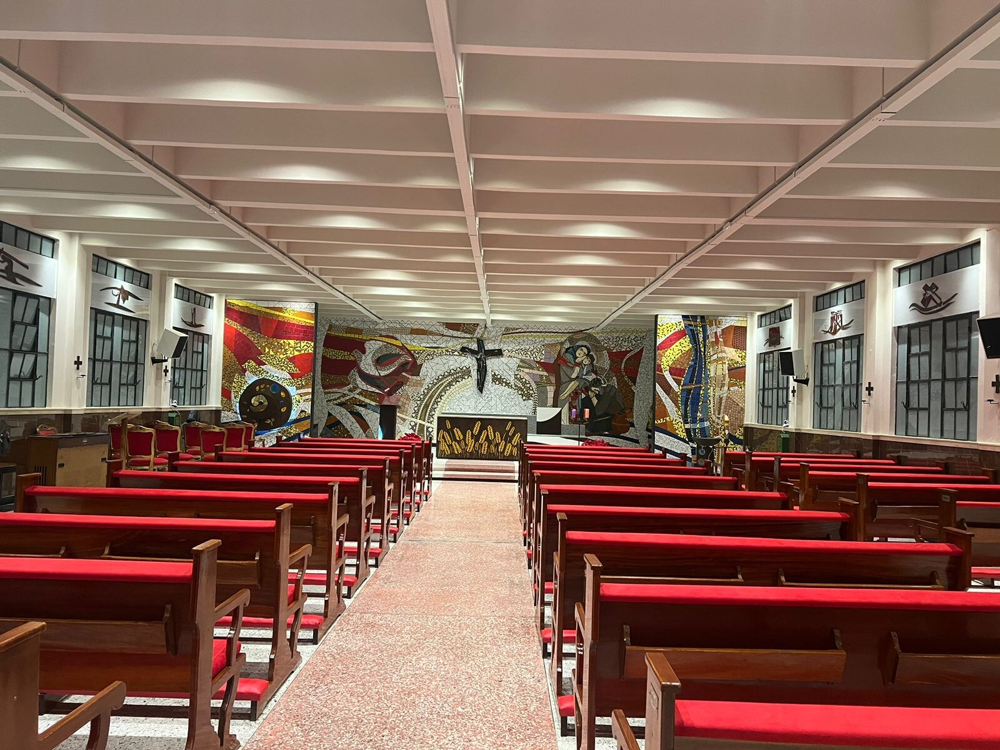
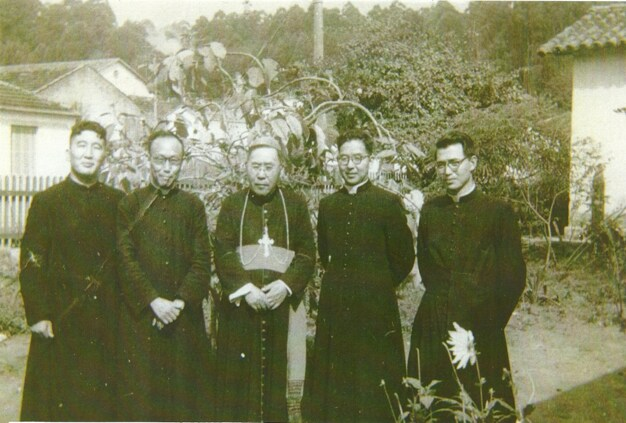
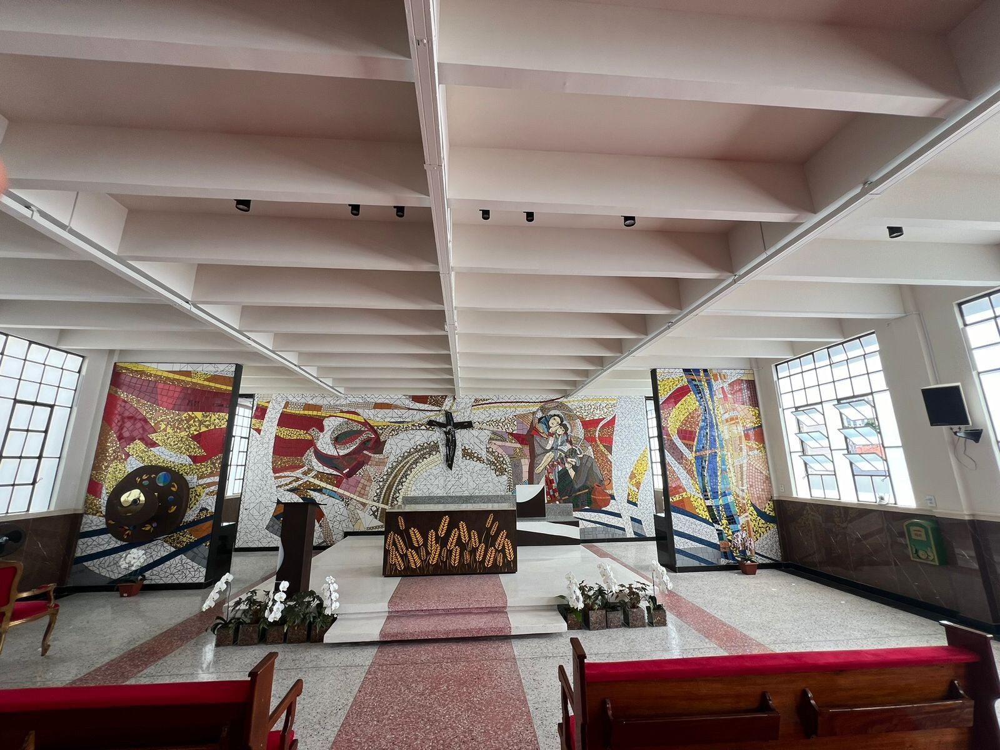
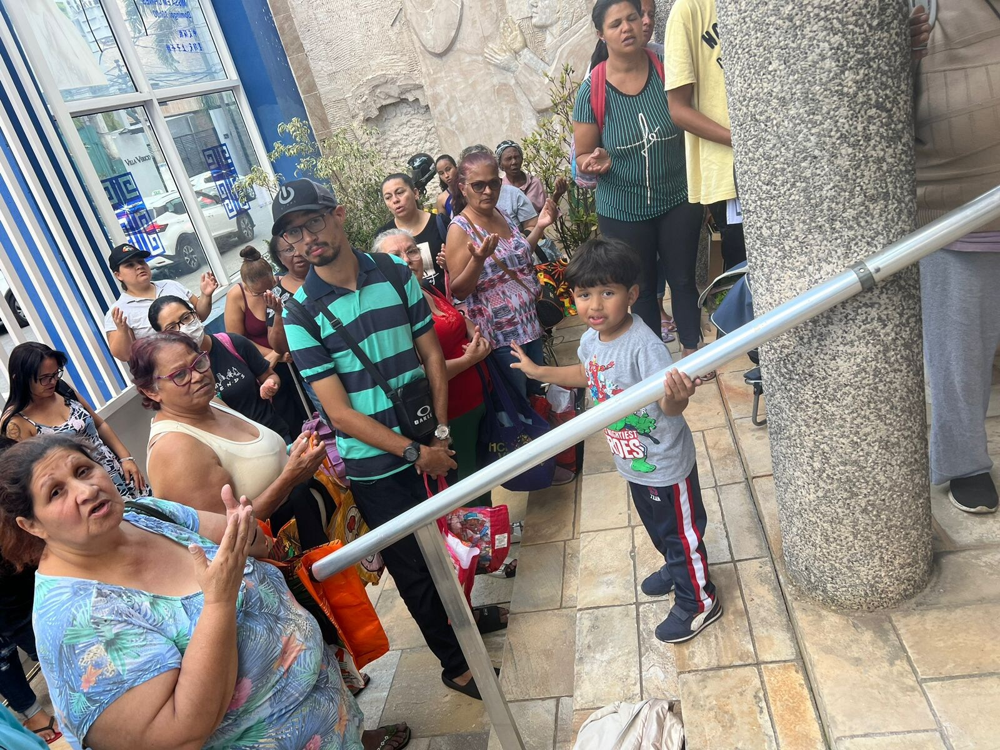

Próximos encontros
Não há novo evento com data confirmada nas fontes consultadas.
Desde a chegada de Dom Job, uma casa de fé para a comunidade chinesa em São Paulo.
Ver horários de Missa ↓
Confissões: combine o horário com o padre pela secretaria. Em feriados, confirme antes de sair.
Não há novo evento com data confirmada nas fontes consultadas.
Agosto a dezembro de 2024 · A missão anunciou uma turma de catequese para a Primeira Comunhão, com encontros aos sábados.
Aos sábados, às 11h. Para outro horário, converse com o padre. A missão oferece curso de preparação para padrinhos e madrinhas.
Combine a celebração do matrimônio com o padre. Para curso de noivos, Primeira Comunhão ou Crisma, consulte a secretaria sobre as turmas.

Em 1955, Dom Job veio ao Brasil com sacerdotes chineses. Na década seguinte, os padres acolhiam no porto de Santos famílias recém-chegadas e as ajudavam a encontrar moradia e trabalho.
A sociedade civil foi fundada em 1961. Em 1964 veio a compra do terreno; em 1968, a inauguração. A escola e a biblioteca da missão guardam a língua e a memória dessa comunidade.


José se levanta de noite e parte para o Egito com o menino e sua mãe.
Como imitá-lo: acompanhe uma família recém-chegada a um serviço de que ela precisa.
Maria e José levam Jesus a Jerusalém para apresentá-lo ao Senhor.
Como imitá-los: reserve na semana um tempo para rezar em família.
Em Nazaré, Maria guarda no coração o que viveu, e Jesus cresce em sabedoria.
Como imitá-la: escute alguém de casa até o fim antes de responder.
Segunda a sexta, das 9h às 13h e das 14h às 17h.
Vila Olímpia · São Paulo, SP
(11) 3845-0264
domjob.amesp@gmail.com